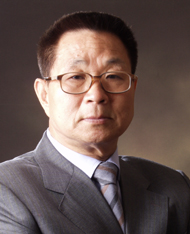

Tathagata, the man with the Third Eye (the eye of wisdom), has come.
Who is he?
Why did he have to come to us?
How did he attain Enlightenment?
Message from Tathagata
Dear Sir/Madam,
I have been travelling endlessly for the wishes of the human world.
I can tell various cases operating for the world to exist, which nobody has known so far.
I can tell what has existed in life and the effect of what happens in the life of individuals.
I am aware of the world of gods which has not been revealed by anyone.
I know the substance of eschatology which has been said to happen in this era.
I can introduce 'uitong' which will be a new visionary medicine. Uitong makes diagnoses and treatments for a great number of diseases possible, without using any medicines or medical instruments.
I can answer to a wide range of problems in the human world and I can provide the solutions on the spot.
I hope that my activities will be helpful to many people and sincerely request your verification of my truth.
Sincerely yours,
Tathagata
Note From the Publisher
On April 6, 1942, Enlightened Master Tathagata was born in South Korea. I was informed He passed away years earlier than we expected on August 21st, 2008 in Malaysia. There are photos linked from 2008 at the bottom of this page that appear to show his location of interment (you must click through the landing page): http://tathagata.info
I have compiled this site to serve as place to collect and publish all known textual content left for us by Tathagata.
Disclaimer: Tathagata spoke virtually no English, aside from the odd word here and there. So all of the contents from him which are here, aside from those under "New Translations", have been translated from Tathagata's native language of Korean into English by members. I just copied them as-is.
Reading the translations alone can only serve as a basic introduction to the true meanings of his teachings. Reading them in Korean as a native speaker with full context would generally be superior.
The other contents under "New Translations" were produced by people who are unfamiliar with Tathagata and merely spoke Korean, or were produced after Tathagata died, and therefore were not checked with him. Everything published here should be considered very carefully and your initial impression of its meaning should not necessarily be believed. For example, after reading His book of poetry Traveler for about a decade, it was only after a major wake up call in my personal life that I began to read many of the poems in Chapter 8. 'Law of Cause and Effect' with meanings which were more than relatively superficial.
All contents are Copyright © 1984 - 2021,
Enlightenment of Tathagata.
All Rights Reserved.
Any use of the articles contained in this app is prohibited under the Digital Millennium Act. You may use small quotes from the articles provided you state that these are the words of Tathagata and you leave a full HTML link to the article page on the website that contains it on this site or another site.
If you would like to contribute to improve this application's stability, performance, or featureset please submit a Pull Request to https://github.com/TathagataTranslated/TathagataTranslated-app-rn. Or if you would like a translation which you made to be published here then you can submit them to us as well for consideration.
If you would like to help spread Tathagata's enlightenment, we would also greatly appreciate your effort to link to an original 'Enlightenment of Tathagata' webpage on appropriate and relevant forum threads across the internet (i.e. on topics such as Karma and Destiny) in order to increase its search ranking so that more people can discover the existence of such a person and such information via search terms like 'enlightenment'. That was personally how I found out about Tathagata. Most of this content was originally published on that website and in this publisher's opinion it represents one of the best and most close-to-life introductions to Tathagata's activities that remains. For more guidance on this check out the page Paul Iddon put together on promotion: http://www.members.tripod.com/tathagata2000/promote.htm
I am usually logged in to receive notifications of new emails if you need to ask me a question at enlightenmentappemails@gmail.com.